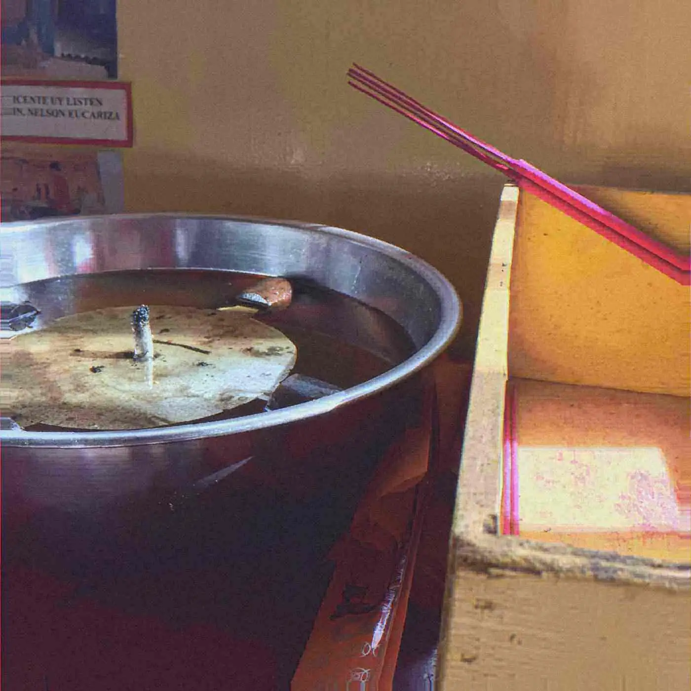

Scene ReportApr 2, 2024
Born I Sat Down
Born I, a DC producer, toured Hip Hop Soundbaths with Plum Village monastics. The album is called AMIDA.
The usual career in independent music is a content schedule with a person attached. Releases mark time. Silence reads as stalling. Born I, a producer and MC in Washington, DC, spent a stretch of touring that broke the schedule on purpose: dates with monks and nuns of Plum Village, the community in the lineage of Thich Nhat Hanh, presenting what he called Hip Hop Soundbaths. Bars over singing bowls. An album, AMIDA, that treats a verse as something you do not rush. A label name, You Are Enough, that says the quiet part in public. This is not a stunt you can understand without granting that Buddhist practice and hip-hop have both, for a long time, been ways of training attention.
Plum Village is a real community, founded by the Vietnamese monk Thich Nhat Hanh, whose teaching emphasized mindfulness as a plain activity rather than as a personality. A sound bath, in the wellness version that reached clubs in the 2010s, is a seated room and a long tone, often bowls, sold as relief. The wellness version is easy to mock and sometimes deserves it, because it can turn a practice into a spa product. Born I’s version puts an MC in the room. That changes the product back into a risk. A rapper in front of a quiet audience cannot hide behind a beat that moves faster than thought. The bowl holds a tone. The verse has to sit in it. If the verse is clever in the wrong way, the room hears the cleverness as noise. He has said his own teacher told him to drop the performance of being a good practitioner. Performing enlightenment is another kind of noise. The sentence belongs in the piece because it is the critique of the project from inside the project.
The lineages he is drawing on are not secret and not his alone. Hip-hop has a long conversation with spiritual practice: the Wu-Tang Clan’s explicit Buddhist references, André 3000’s wanderings, the use of Alice Coltrane’s music — her harp, her organ, her devotional records — as a sample source and as a standard. Coltrane is the important one to get right. She was a musician who took religious life seriously and whose records do not sit obediently in the jazz bin or the sacred bin. Producers who sample her for a mood are doing the spa version. Producers who treat her as a composer are doing something harder. Born I’s project, bars over bowls, is closer to the second if the bars are willing to be plain. AMIDA is the document. The name refers to Amitābha, the Buddha of a Pure Land tradition. Using it as an album title is a theological choice, not a texture.
Clubs, meanwhile, spent the early 2020s adding quiet on purpose: a breathwork hour before a headliner, a sound bath as an opening act, a DJ letting a breakdown last long enough that people had to decide whether to stay. Some of this was care, in a period when dancing next to strangers had been medically complicated. Some of it was aesthetic trend. The difference is whether the quiet has a practice behind it or only a look. A tour with monastics is a heavy piece of evidence on the practice side. It does not make every club sound bath serious. It makes one artist’s version traceable to a community with a name and a discipline. Traceable is what a scene report is for.
The industry math he is refusing — release often or disappear — is the math of the streaming services and of the independent artists who have to live on them. Refusing it has a cost he does not need this article to invent: fewer release-week headlines, a harder time staying in the recommendation machinery, the suspicion that stillness is brand differentiation. The label name answers the suspicion in advance. You Are Enough is a dangerous phrase, because the wellness industry has already spent it. In the context of a rapper who is also a meditation teacher, and who was told to stop performing goodness, the phrase is closer to a corrective. Enough is the opposite of the schedule. It is also the opposite of the purity test that scene culture applies to anyone who steps off the dance floor. Sitting down is not failure. On this tour it was the gig.
A magazine that loves a kick drum should be able to write about a room that declines one, without claiming the decline is superior. It is not superior. It is a different instrument. The bowl sustains. The kick attacks. Born I’s experiment is to see what a verse, which usually rides an attack, does over a sustain. AMIDA is where that experiment becomes a record you can play without the tour. The tour is where it became a room. Both are public. Neither needs to be romanticized into a lesson for every producer who is merely late with a single. Lateness is not practice. Practice is what he said he was doing, with whom, and under what name.